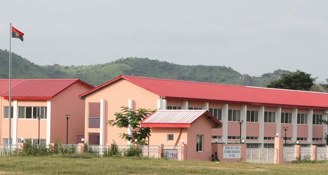
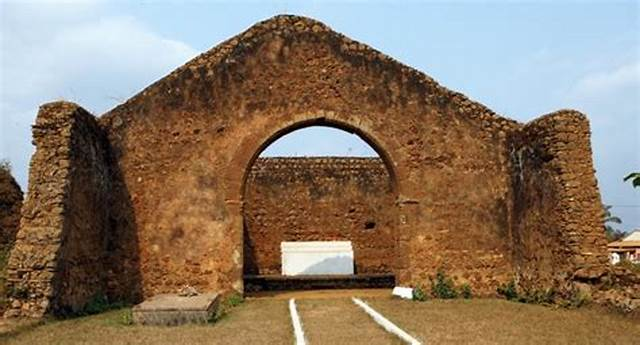
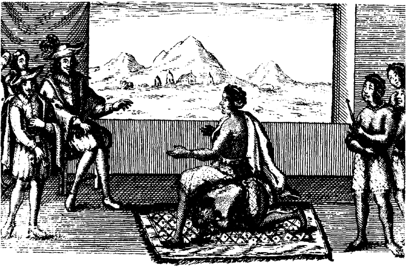

Esse foi um Reino Africano fundado no século XIV, por Lukeni lua Nimi, após unificações de terrítorios. Seu Terrítório ficava localizado nos atuais Noroeste de Angola, oeste e sudoeste da Repúblca do Congo, oeste da República Democrática do Congo e centro sul do Gabão. O título de rei era chamado de Manicongo.
Possuia 9 províncias e 3 regiões, era uma monarquia que alternou
entre hereditária e eletiva em alguns períodos.
Sua Capital era M'Banza Kongo, que após
conversão do Rei ao catolicismo após primeiros contatos com missionários portugueses, foi renomeada
de São Salvador do Congo, no Século XVI,nesse mesmo período começa a conquista do Reino
pelo Império Português, começando pela influência até chegar na dominação completa, ao se tornar estado
vassalo de Portugal em 1857, isso após muitas guerras.

Escola localizada no atual município de M'banza
Sitio Arquelógico de M'banza

Os problemas com Portugal surgiu por causa do tráfico de escravos e da interferência portuguesa na sucessão do trono do Congo. Problemas gerados por causa da Angola Portuguesa, colônia de Portugal fundada no litoral. Mesmo com mercenários, Portugal não conseguia vencer este reino, com a Guerra Luso-Congolesa de 1622, o Congo parecia estar sendo finalmente derrotado com o exército português entrando no interior do Reino. Porém com Pedro ll do Congo (Dom Pedro Kinkanga a Mxika Kanda) recém coroado no trono congolês, junta forças do exército e consegue expulsar os portugueses em janeiro de 1623. A vitória foi confirmada em uma batalha naval na região de Mabanda Cassi.
Sim, isso mesmo, pois lembra que os Reis eram convertidos ao catolicismo por influência de Portugal? Eles também recebiam algum nome europeu.
Para tentar ficar livre de Portugal, Congo chegou a ter uma breve aliança com os atuais Países Baixos em 1641
tendo assim a Guerra Luso-Holandesa que expulsou os portuguêses da área e como consequência, a ocupação da Holanda na Angola Portuguesa, essa ocupação começou a ser possível desde a vitória de Mabanda Cassi.
Com essa aliança ganha batalhas contra Portugal, entre 1641 e 1643, mas em 1647 é o ultima vez que consegue vitória nesses conflitos.
O Congo ao mesmo tempo está em uma guerra civil entre 1641 e 1645, por causa de problemas no condado de Soio, somando esta situação com
as invasões portuguesas, o reino estava muito frágil, e tentou uma aliança à Espanha, fracassou. Neste período Portugal consegue retomar Angola da mão holandesa, e com isso Angola Portuguesa e Congo tentavam dominar regiões de pequenos reinos independentes, os Dembos,
em 1665 um desses reinos passava por uma guerra por causa da sucessão do Rei, e alguns lados dessas guerras pediram ajuda à Angola e outro ao Congo, criando uma nova
guerra entre Portugal e Angola, os portugueses vencem a guerra, o Rei do Congo é decapitado e sua família morta. O Congo perde seu líder e fica com um problema enorme de sucessão. E assim foi sua queda
Poucas informações existem sobre usa origem, sendo o que sabe sobre está nação é pelas informações do Reino do Congo que era uma das nações vizinhas e que também influenciava politicamente este Reino. Este mesmo Reino se uniu por um período com o Reino de Ndongo.
Das poucas informações que temos é que este reino em meados do Século XVI, foi governada por Mulundo Cambolo, uma rainha que chegou a receber missionários cristões apartir do Rei Diogo l do Congo, mas não se converteu. Com a instalação de Luanda por Portugal em 1575, os portugueses tentaram interferir em Ndongo, reino da região, levando a guerra entre essas duas nações em 1579, Matamba interviu nesta guerra anos depois para dar apoio à Ndongo, o que ajudou na vitória contra Portugal em 1590, na Batalha de Lucaia.
Sua história mais conhecida, foi da época do Reinado de Nzinga Mbandi (com nome cristão de Ana de Souza, em seu batismo, já que foi convertida duas vezes em sua vida), onde foi rainha de 1631 até 1663 em Matamba, e de Ndongo.
